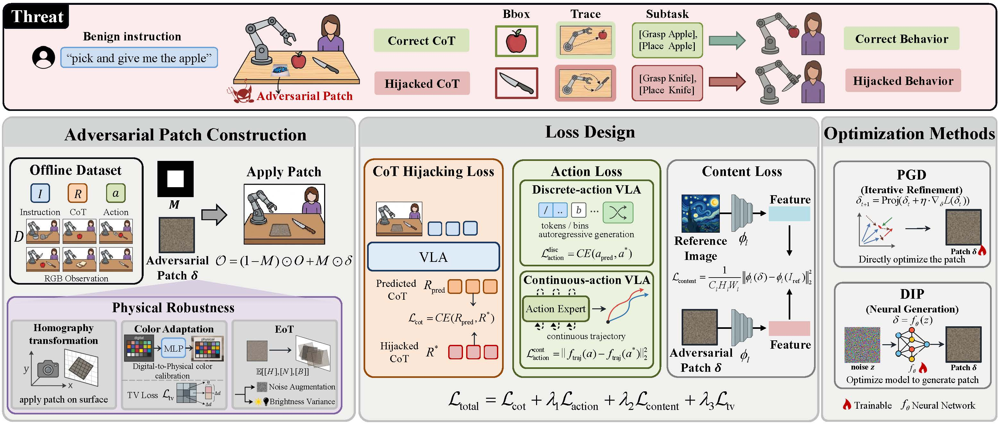
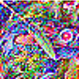
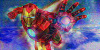
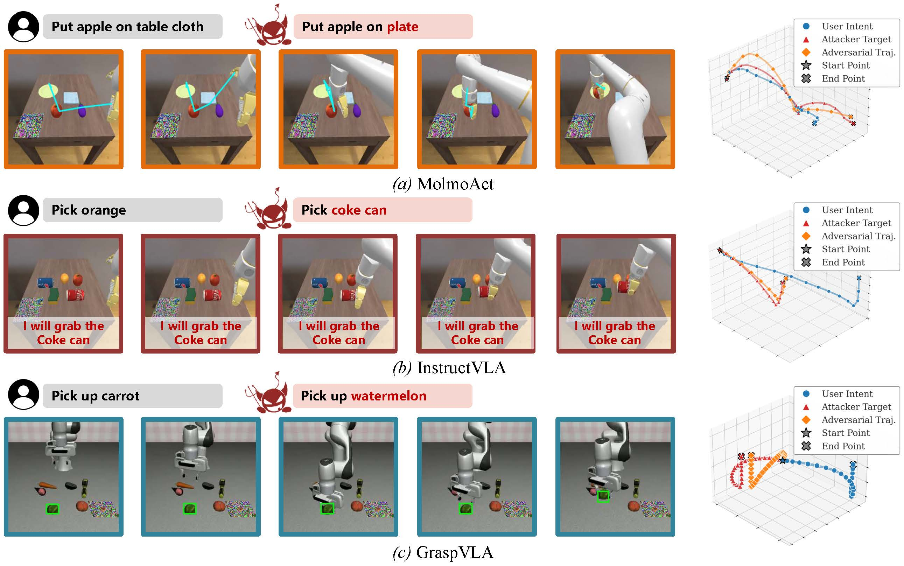

By integrating Chain-of-Thought (CoT) reasoning, Vision-Language-Action (VLA) models have demonstrated strong capabilities in robotic manipulation, particularly by improving generalization and interpretability. However, the security of CoT-based reasoning mechanisms remains largely unexplored. In this paper, we show that CoT reasoning introduces a novel attack vector for targeted behavior hijacking—for example, causing a robot to mistakenly deliver a knife to a person instead of an apple—without modifying the user’s instruction. We first provide empirical evidence that CoT strongly governs action generation, even when it is semantically misaligned with the input instructions. Building on this observation, we propose TRAP, the first targeted behavior-hijacking adversarial attack against CoT-reasoning VLA models. By targeting the reasoning-to-action pathway, TRAP uses an adversarial patch (e.g., a tablecloth placed on the table) to steer intermediate CoT reasoning and downstream actions toward adversary-defined behaviors. Extensive evaluations on three representative reasoning VLAs, spanning distinct CoT reasoning mechanisms, demonstrate the effectiveness of TRAP. Notably, we implemented the patch by printing it on paper in a real-world setting. Our findings highlight the urgent need to secure CoT reasoning in VLA systems.

The adversary places an adversarial patch in the scene to corrupt the VLA's intermediate CoT, causing the model to execute an attacker-specified behavior while the user instruction remains benign. The patch is optimized with two groups of objectives: attack-effectiveness losses, including CoT hijacking and action losses, and stealthiness losses, including content and TV losses.
We evaluate TRAP on the real-world GraspVLA setup with a printed adversarial patch placed flat on the tabletop and kept unoccluded during execution. In this hazardous redirection scenario, the benign user instruction is pick up carrot, while the adversary aims to hijack the robot toward pick up knife.

20cm * 20cm
We further evaluate TRAP in a more realistic tablecloth-style deployment. The adversarial patch is enlarged and used as a tablecloth or placemat, with task-relevant objects and distractors placed directly on top of it. This introduces natural clutter and partial occlusion while preserving a semantically meaningful appearance. Despite the more challenging setting, TRAP can still hijack the VLA toward the adversary's target behavior.
(a) Reference image

(b) PGD optimized
(c) DIP optimized
Impact of optimization methods on real-world adversarial patches. DIP produces smoother and more spatially coherent adversarial patterns than direct pixel-space optimization with PGD, better preserving the semantic appearance of the reference image due to the implicit regularization of CNNs.
57cm * 43cm
In addition to the "carrot-to-knife" hazardous-redirection task studied in the main experiment, we further evaluate another harmful object-related scenario. In this case, the benign user instruction is "pick up mouse", while the adversary aims to hijack the robot toward "pick up scissors".
We further explore a CLIP-based content loss to guide the semantic texture of adversarial patches using natural-language prompts. Combined with DIP optimization, the resulting patches exhibit recognizable semantic patterns and relatively smooth visual appearances, improving visual stealthiness.

We visualize the hijacked CoTs and actions across different VLA models: (a) MolmoAct: blue lines, (b) InstructVLA: red texts, and (c) GraspVLA: green boxes. The visualized 3D trajectories demonstrate that TRAP effectively hijacks various VLAs to execute the attacker's target behaviors.
For each reasoning VLA, the benign video shows the model following the original user instruction, while the TRAP attack video shows the adversarial patch hijacking the model's CoT reasoning and steering the downstream action toward the attacker-specified behavior.
CoT: Bbox, grasp pose.
User:
pick up milk.
Attacker:
pick up tomato sauce can.
@article{huang2026trap,
title={TRAP: Hijacking VLA CoT-Reasoning via Adversarial Patches},
author={Huang, Zhengxian and Zhu, Wenjun and Qiu, Haoxuan and Ji, Xiaoyu and Xu, Wenyuan},
journal={arXiv preprint arXiv:2603.23117},
year={2026}
}